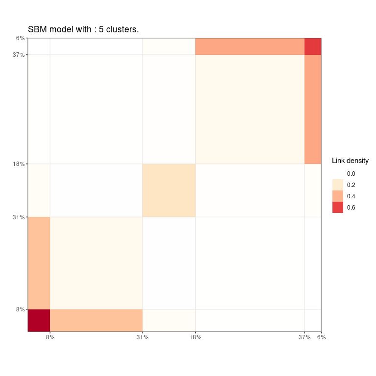

Greed enables model-based clustering of networks, matrices of count data and much more with different types of generative models. Model-selection and clustering are performed in combination by optimizing the Integrated Classification Likelihood. Details of the algorithms and methods proposed by this package can be found in Côme, Jouvin, Latouche, and Bouveyron (2021) 10.1007/s11634-021-00440-z.

Dedicated to clustering and visualization, the package is very general and currently handles the following tasks:
-
Continuous data clustering with Gaussian Mixture Models. A tutorial is available in
vignette("GMM"). See also the documentation for theGmmandDiagGmmS4 classes. -
Graph data clustering with the Stochastic Block Model or its degree corrected variants. A tutorial is available in
vignette("SBM"). See also the documentation for theSbmanddcSbmS4 classes. -
Categorical data clustering with the Latent Class Analysis. A tutorial is available in
vignette("LCA"). See also the documentation for theLcaS4 class. -
Count data clustering with the Mixture of Multinomials model. A tutorial will soon be available in
vignette("MoM"). For now, we refer to the documentation for theMomS4 class. -
Mixed-typed data clustering, e.g. categorical and numerical but the package handles virtually any type of data combination by stacking models on top of each data types. For example graph data with continuous or categorical data attached to the nodes are handled. A tutorial is available in
vignette("Mixed-Models"). See also the documentation for theMixedModelsS4 class. -
Mixture of regression for simultaneous clustering and fitting a regression model in each cluster. A tutorial is available in
vignette("MoR"). See also the documentation for theMoRS4 class. -
Co-clustering of binary and count-data via the Latent Block Model and its degree-corrected variant. A tutorial will soon be available in
vignette("LBM"). For now, we refer to the documentation for theDcLbmS4 class.
With the Integrated Classification Likelihood, the parameters of the models are integrated out with a natural regularization effect for complex models. This penalization allows to automatically find a suitable value for the number of clusters K⋆. A user only needs to provide an initial guess for the number of clusters K, as well as values for the prior parameters (reasonable default values are used if no prior information is given). The default optimization is performed thanks to a combination of a greedy local search and a genetic algorithm described in Côme, Jouvin, Latouche, and Bouveyron (2021), but several other optimization algorithms are also available.
Eventually, a whole hierarchy of solutions from K⋆ to 1 cluster is extracted. This enables an ordering of the clusters, and the exploration of simpler clustering along the hierarchy. The package also provides some plotting functionality.
Installation
You can install the development version of greed from GitHub with:
#GitHub
install.packages("devtools")
devtools::install_github("comeetie/greed")Or use the CRAN version:
#CRAN
install.packages("greed")Usage: the greed function
The main entry point for using the package is simply thegreed function (see ?greed). The generative model will be chosen automatically to fit the type of the provided data, but you may specify another choice with the model argument.
We illustrate its use on a graph clustering example with the classical Books network ?Books.
More use cases and their specific plotting functionality are described below.
library(greed)
data(Books)
sol <- greed(Books$X)
#>
#> ── Fitting a guess DCSBM model ──
#>
#> ℹ Initializing a population of 20 solutions.
#> ℹ Generation 1 : best solution with an ICL of -1346 and 4 clusters.
#> ℹ Generation 2 : best solution with an ICL of -1346 and 4 clusters.
#> ── Final clustering ──
#>
#> ── Clustering with a DCSBM model 3 clusters and an ICL of -1345You may specify the model you want to use and set the priors parameters with the (model argument), the optimization algorithm (alg argument) and the initial number of cluster K. Here Boos$X is a square sparse matrix and a graph clustering ?`DcSbm-class` model will be used by default. By default, the Hybrid genetic algorithm is used.
The next example illustrates a usage without default values. A binary Sbm prior is used, along with a spectral clustering algorithm for graphs.
Visualization
Many plotting functions are available for exploring the clustering results, and all are accessible via the plot() S4 method. By default, the hierarchical structure found between clusters is returned, as a dendrogram:
plot(sol)
However, depending of the specified model, a type argument may be specified. Here, with our graph clustering model, a summary representation of the adjacency matrix can be obtained via
plot(sol,type='blocks') ## Inspecting the results
## Inspecting the results
The resulting partition may be extracted with the ?clustering method, as well as the final ICL value with ?ICL. You may also extract a Maximum a Posteriori (MAP) estimation of the model parameters (conditionally to the estimated clustering) with the ?coef method.
table(clustering(sol))
#>
#> 1 2 3 4 5
#> 30 23 11 28 13
ICL(sol)
#> [1] -1315.899
coef(sol)
#> $pi
#> [1] 0.2857143 0.2190476 0.1047619 0.2666667 0.1238095
#>
#> $thetakl
#> [,1] [,2] [,3] [,4] [,5]
#> [1,] 0.310344828 0.06521739 0.009090909 0.000000000 0.00000000
#> [2,] 0.065217391 0.13043478 0.019762846 0.010869565 0.01337793
#> [3,] 0.009090909 0.01976285 0.436363636 0.006493506 0.04895105
#> [4,] 0.000000000 0.01086957 0.006493506 0.084656085 0.27747253
#> [5,] 0.000000000 0.01337793 0.048951049 0.277472527 0.55128205Eventually, one may explore some coarser partitions using the cut method:

Typical use cases
Alongside with the previous graph clustering example below, we give a preview of other use cases and plotting functionalities that are model-dependent.
Continuous data clustering with GMM
Here, we use the diabetes dataset of mclust. X_cont is a 145 × 3 design matrix, and a full-covariance Gmm model is specified as a model prior.
data("diabetes", package = "mclust")
X_cont = diabetes[,-1]
sol_cont <- greed(X = X_cont, model=Gmm())
#>
#> ── Fitting a GMM model ──
#>
#> ℹ Initializing a population of 20 solutions.
#> ℹ Generation 1 : best solution with an ICL of -2413 and 6 clusters.
#> ℹ Generation 2 : best solution with an ICL of -2411 and 6 clusters.
#> ℹ Generation 3 : best solution with an ICL of -2401 and 3 clusters.
#> ℹ Generation 4 : best solution with an ICL of -2401 and 3 clusters.
#> ── Final clustering ──
#>
#> ── Clustering with a GMM model 3 clusters and an ICL of -2401
table(diabetes$cl,clustering(sol_cont))
#>
#> 1 2 3
#> Chemical 0 25 11
#> Normal 0 3 73
#> Overt 27 6 0Specific plots are available for this type of models
- Pairs plots
gmmpairs(sol_cont, X_cont)
- Violins plots
plot(sol_cont, type='violins')
See the
vignette("GMM")for an in-depth tutorial.
Categorical data clustering with latent class analysis
Categorical data are typically found in
- Item response theory
- Questionnaires
As an illustrative example, we use an extraction from the ?Youngpeoplesurvey questionaire data, where each variable is an answer to “On a scale of 1 to 5 (NA allowed), how do you like musical genre [X]”, for 19 musical genres [X]. Next table shows a quick glimpse at the data.
data("Youngpeoplesurvey")
head(X[,2:8])
#> # A tibble: 6 x 7
#> `Slow songs or fast songs` Dance Folk Country `Classical music` Musical Pop
#> <fct> <fct> <fct> <fct> <fct> <fct> <fct>
#> 1 5 3 2 1 2 4 3
#> 2 3 2 2 2 4 3 3
#> 3 5 3 2 2 4 3 5
#> 4 3 3 2 1 4 3 4
#> 5 5 3 3 4 4 4 4
#> 6 4 4 3 1 5 3 5Plot the frequency of each modality inside each cluster for all categorical variables. The size of the point represents the frequency, the bigger the point, the larger the frequency.
sol=greed(X)
#>
#> ── Fitting a LCA model ──
#>
#> ℹ Initializing a population of 20 solutions.
#> ℹ Generation 1 : best solution with an ICL of -5766 and 5 clusters.
#> ℹ Generation 2 : best solution with an ICL of -5740 and 6 clusters.
#> ℹ Generation 3 : best solution with an ICL of -5740 and 6 clusters.
#> ── Final clustering ──
#>
#> ── Clustering with a LCA model 5 clusters and an ICL of -5730
plot(sol,type='marginals') 
See the
vignette("LCA")for details.
Graph clustering, SBM like models
The SBM allows handling categorical edges for graphs encoding complex, non-binary interaction. This is done through a multinomial SBM implemented in the MultSbm S4 class. A dedicated plot function is available, representing aggregated adjacency matrix for each modality/interaction/view.
data("NewGuinea")
dim(NewGuinea)
#> [1] 16 16 3
sol_newguinea = greed(NewGuinea,model=MultSbm())
#>
#> ── Fitting a guess MULTSBM model ──
#>
#> ℹ Initializing a population of 20 solutions.
#> ℹ Generation 1 : best solution with an ICL of -125 and 2 clusters.
#> ℹ Generation 2 : best solution with an ICL of -125 and 2 clusters.
#> ── Final clustering ──
#>
#> ── Clustering with a MULTSBM model 2 clusters and an ICL of -125
plot(sol_newguinea,type='blocks')
See the
vignette("SBM")for details.
Mixture of Regression
See the
vignette("MoR")for details.
Advanced models`
See the
vignette("Mixed-Models")for details.